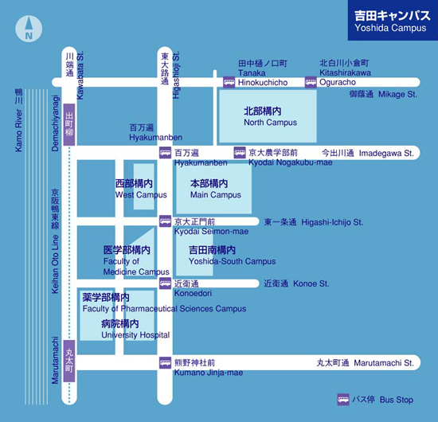
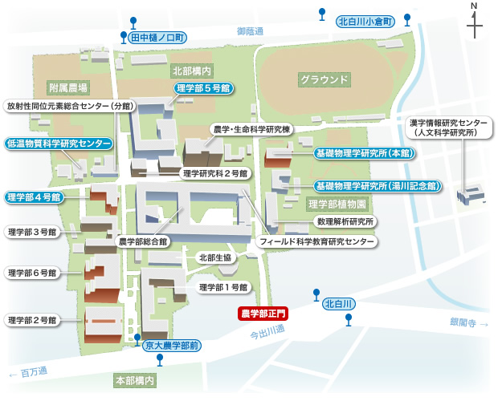

所在地情報
〒606-8502 京都市左京区追分町
京都大学大学院 理学研究科 物理学第二教室 宇宙線研究室
アクセスマップ

京都大学北部キャンパスへ
京阪 出町柳駅より徒歩15分
京都市バス 京大農学部前より徒歩2分
京都市バス 田中樋ノ口町より徒歩2分
建物配置図

宇宙線研究室へは理学部５号館へ
主要交通情報
| 主要鉄道駅 | 利用交通機関等 | 乗車バス停 | 市バス系統 | 市バス経路 | 本学〜の 所要時間 |
下車バス停 |
|---|---|---|---|---|---|---|
| JR 京都駅〜 |
市バス | 京都駅前 (停留所) |
206系統 | 「東山通 北大路バスターミナル」行 | 約35分 | 百万遍 →今出川通を東に徒歩10分 |
| 17系統 | 「河原町通 錦林車庫」行 | 約35分 | 京大農学部前 | |||
| 阪急 河原町駅〜 |
市バス | 四条河原町 (停留所) |
201系統 | 「祇園・百万遍」行 | 約25分 | 百万遍 →今出川通を東に徒歩10分 |
| 31系統 | 「東山通 高野・岩倉」行 | 約25分 | 百万遍 →今出川通を東に徒歩10分 |
|||
| 17系統 | 「河原町通 銀閣寺・錦林車庫」行 | 約25分 | 京大農学部前 | |||
| 3系統 | 「百万遍 北白川仕伏町」行 | 約25分 | 田中樋ノ口町 →御蔭通を西に徒歩1分 |
|||
| 地下鉄 烏丸線 烏丸今出川駅〜 |
市バス | 烏丸今出川 | 203系統 | 「今出川通 銀閣寺道・錦林車庫」行 | 約15分 | 京大農学部前 |
| 201系統 | 「百万遍・祇園」行 | 約15分 | 百万遍 →今出川通を東に徒歩10分 |
|||
| 地下鉄 東西線 東山駅〜 |
市バス | 東山三条 | 206系統 | 「高野 北大路バスターミナル」行 | 約20分 | 百万遍 →今出川通を東に徒歩10分 |
| 201系統 | 「百万遍・千本今出川」行 | 約20分 | 百万遍 →今出川通を東に徒歩10分 |
|||
| 31系統 | 「東山通 高野・岩倉」行 | 約20分 | 百万遍 →今出川通を東に徒歩10分 |
|||
| 京阪 出町柳駅 |
徒歩 | （東へ） | 約20分 | |||
| 市バス | 出町柳駅前 | 17系統 | 「銀閣寺・錦林車庫」行 | 約8分 | 京大農学部前 | |